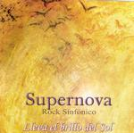

| Artist: | Supernova |
| Title: | Lleva El Brillo Del Sol |
| Label: | self produced SN002 |
| Length(s): | 56 minutes |
| Year(s) of release: | 2002 |
| Month of review: | [04/2003] |
| 1) | El Hipernauta | 8.09 |
| 2) | Apocalipsis II | 7.26 |
| 3) | Despues De Todo | 6.57 |
Isis
| 4) | Nacimiento | 1.41 |
| 5) | Divinizacion | 8.57 |
| 6) | El Esplendor | 1.01 |
| 7) | Inmensidad Total | 6.13 |
| 8) | Superciencia | 0.50 |
| 9) | Secretos Divinos | 7.25 |
| 10) | La Fuerza | 0.47 |
| 11) | El Viaje De Isis | 7.02 |
With Apocalipsis II the music is full of mystery. I am reminded of Yes here, although I am not exactly sure why. The conclusion to the first verse is very good. The continuation is really dark again. Plenty of atmosphere here. A guest musician takes care of the drone of rhythm guitars on this great piece of music. Pace comes more and more into the track, the threat stays. In a way I am reminded of the recent Proto-Kaw album released on Cuneiform, except for the very symphonic vocal outbursts, that is.
Despues De Todo is a lot more playful than the previous one. Full of flute and keyboards, which more or less alternate, this song is less an organic whole. The electronic drums do not have the drive to make the song groove enough. Think of ELP at their most playful here. Thematic the song is fine, especially when they move into the piano passage towards the end.
The final over half an hour of the album is taken up by the multi-parted Isis, which consists four longer parts, each preceded by a shorter one. Nacimiento is the shortish overture, with a strong orchestral feel. Divinizacion is the longest single track on this album, opening percussively. The orchestral feel stays though, with the keyboards playing the parts of the trumpets, heralding, followed by a full vocal part in which Maria again shows her abilities. Then we come to a quieter part, before the bombastic ELPish prog breaks loose again. I do think that compared to ELP, Supernova packs more atmosphere into their songs, which is a good thing. The harpsichord of the second part sounds a bit too synthetic, however. The song ends on a bombastic note, same as the opening verse. We move right into the dark and slow El Esplendor, a short interlude before we come to Inmensidad Total. This is a track filled with string like passages, fast paced drumming and plainly audible bass playing, all revolving around the synthetic trumpets and lead and backing choir vocals by Maria. Thematically, Isis also recovers some of the themes used in the song, as can be heard in the reprise Superciencia. They do reoccur in a different way.
On Secretos Divinos it is the low bass that takes the fore, playing the role of the acoustic guitar in other bands. The flute adds its mellow accompaniment, as do the romantic vocals. The drummer adds some accidental accents. The electronic pads that are used instead of toms have the disadvantage that one often thinks that one is listening to a drumcomputer, but this is not the case. It does make the music sound more synthetic than necessary is my impression.The pace comes into the track before halfway, mainly because the staccato drums. The vocals give some rest points in between.
Before we come to the final track, La Fuerza is a short interlude. El Viaje De Isis, where the vocalist should take a bit more care not to let her enthusiasm derail her vocal abilities. Although the emotional vocal part works well enough, the instrumental side can be bit a cheesy on this classically oriented conclusion.